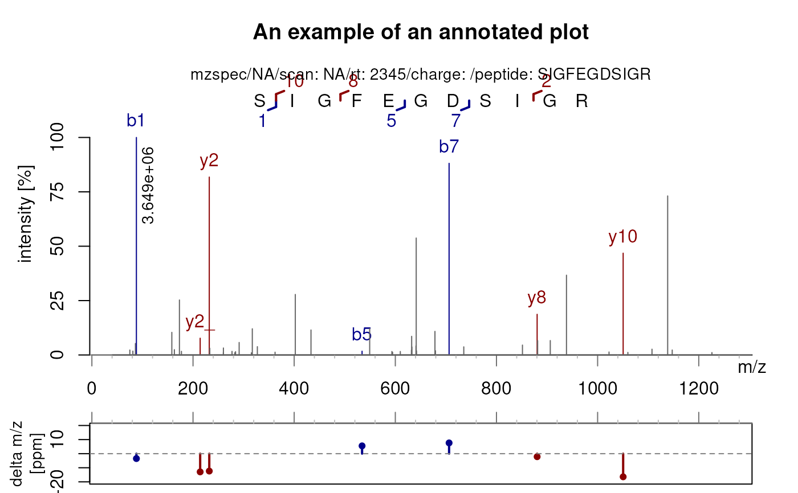
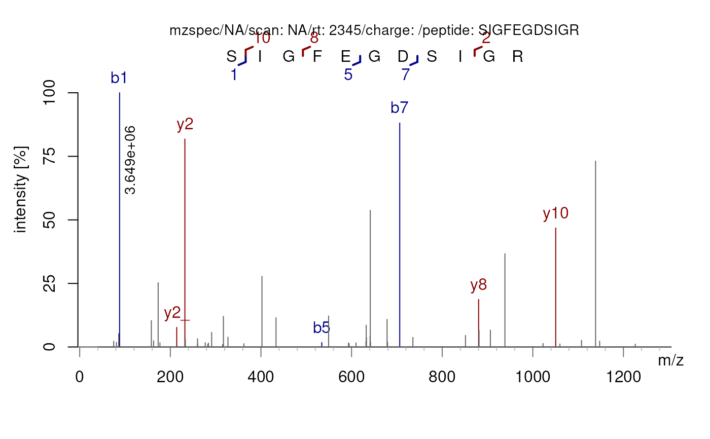
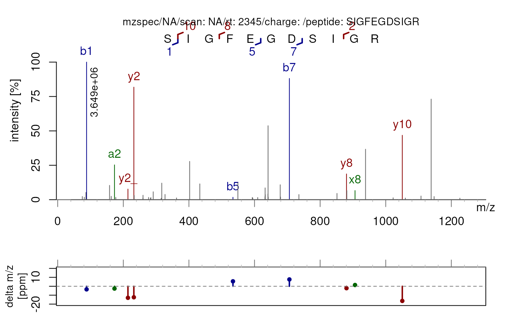
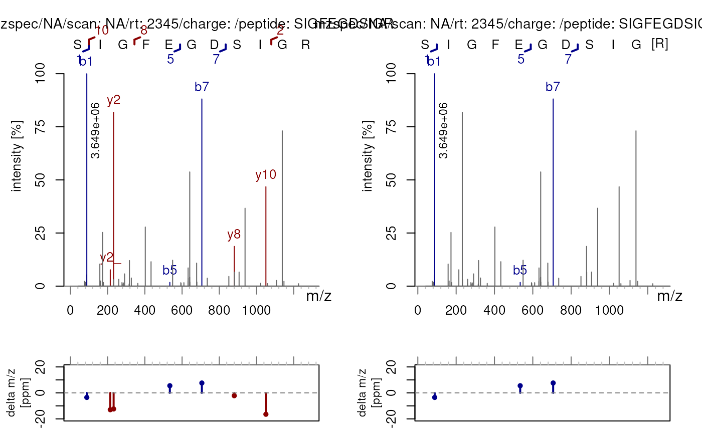
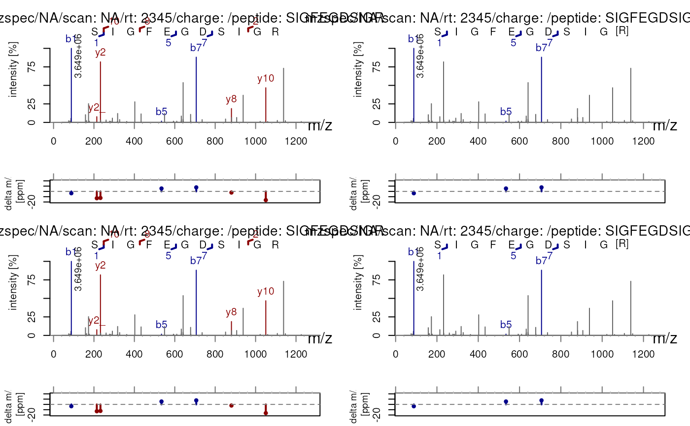
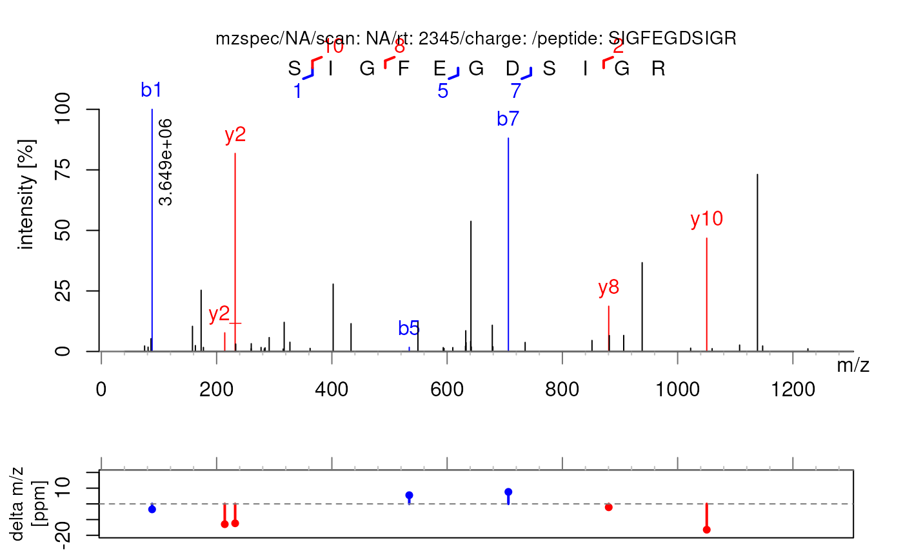

plotSpectraPTM() creates annotated visualisations of MS/MS spectra,
designed to explore fragment identifications and post-translational
modifications (PTMs).
plotSpectraPTM() plots a spectrum's m/z values on the x-axis and
corresponding intensities on the y-axis, labeling the peaks according to
theoretical fragment ions (e.g., b, y, a, c, x, z) computed using
labelFragments() and calculateFragments().
plotSpectraPTM(
x,
deltaMz = TRUE,
ppm = 20,
xlab = "m/z",
ylab = "intensity [%]",
xlim = numeric(),
ylim = numeric(),
main = character(),
col = c(y = "darkred", b = "darkblue", acxy = "darkgreen", other = "grey40"),
labelCex = 1,
labelSrt = 0,
labelAdj = NULL,
labelPos = 3,
labelOffset = 0.5,
asp = 1,
minorTicks = TRUE,
USI = TRUE,
...
)a Spectra() object.
logical(1L) If TRUE, adds an additional plot showing the
difference of mass over charge between matched oberved and theoretical
fragments in parts per million. Does not yet support modifications. The
matching is based on calculateFragments() and needs a 'sequence'
variable in spectraVariables(x). Default is set to TRUE.
integer(1L) Sets the limits of the delta m/z plot and is passed
to labelFragments().
character(1) with the label for the x-axis (by default xlab = "m/z").
character(1) with the label for the y-axis (by default ylab = "intensity").
numeric(2) defining the x-axis limits. The range of m/z values
are used by default.
numeric(2) defining the y-axis limits. The range of intensity
values are used by default.
character(1) with the title for the plot. By default the
spectrum's MS level and retention time (in seconds) is used.
Named character(4L). Colors for the labels, the character names
need to be "b", "y", "acxz" and "other", respectively for the b-ions,
y-ions, a,c,x,z-ions and the unidentified fragments.
numeric(1) giving the amount by which the text should be
magnified relative to the default. See parameter cex in par().
numeric(1) defining the rotation of the label. See
parameter srt in text().
see parameter adj in text().
see parameter pos in text().
see parameter offset in text().
for plotSpectraPTM(), the target ratio (columns / rows) when
plotting mutliple spectra (e.g. for 20 spectra use asp = 4/5 for 4
columns and 5 rows or asp = 5/4 for 5 columns and 4 rows; see
grDevices::n2mfrow() for details). If deltaMz is TRUE, asp is
ignored.
logical(1L). If TRUE, minor ticks are added to the
plots. Default is set to TRUE.
logical(1L). If TRUE, the universal spectrum identifier is
displayed.
additional parameters to be passed to the labelFragments()
function.
Creates a plot depicting an MS/MS-MS spectrum.
library("Spectra")
sp <- DataFrame(msLevel = 2L, rtime = 2345, sequence = "SIGFEGDSIGR")
sp$mz <- list(c(75.048614501953, 81.069030761719, 86.085876464844,
88.039, 158.089569091797, 163.114898681641,
173.128, 177.098587036133, 214.127075195312,
232.137542724609, 233.140335083008, 259.938415527344,
260.084167480469, 277.111572265625, 282.680786132812,
284.079437255859, 291.208282470703, 315.422576904297,
317.22509765625, 327.2060546875, 362.211944580078,
402.235290527344, 433.255004882812, 534.258783,
549.305236816406, 593.217041015625, 594.595092773438,
609.848327636719, 631.819702148438, 632.324035644531,
632.804931640625, 640.8193359375, 641.309936523438,
641.82568359375, 678.357238769531, 679.346252441406,
706.309623, 735.358947753906, 851.384033203125,
880.414001464844, 881.40185546875, 906.396433105469,
938.445861816406, 1022.56658935547, 1050.50415039062,
1059.82800292969, 1107.52734375, 1138.521484375,
1147.51538085938, 1226.056640625))
sp$intensity <- list(c(83143.03, 65473.8, 192735.53, 3649178.5,
379537.81, 89117.58, 922802.69, 61190.44,
281353.22, 2984798.75, 111935.03, 42512.57,
117443.59, 60773.67, 39108.15, 55350.43,
209952.97, 37001.18, 439515.53, 139584.47,
46842.71, 1015457.44, 419382.31, 63378.77,
444406.66, 58426.91, 46007.71, 58711.72,
80675.59, 312799.97, 134451.72, 151969.72,
1961975, 69405.76, 395735.62, 71002.98,
3215457.75, 136619.47, 166158.69, 682329.75,
239964.69, 242025.44, 1338597.62, 50118.02,
1708093.12, 43119.03, 97048.02, 2668231.75,
83310.2, 40705.72))
sp <- Spectra(sp)
## Annotate the spectum with the fragment labels
plotSpectraPTM(sp, main = "An example of an annotated plot")

## Annotate the spectrum without the delta m/z plot
plotSpectraPTM(sp, deltaMz = FALSE)

## Annotate the spectrum with different ion types
plotSpectraPTM(sp, type = c("a", "b", "x", "y"))

## Annotate the spectrum with variable modifications
plotSpectraPTM(sp, variable_modifications = c(R = 49.469))

## Annotate multiple spectra at a time
plotSpectraPTM(c(sp,sp), variable_modifications = c(R = 49.469))

## Color the peaks with different colors
plotSpectraPTM(sp, col = c(y = "red", b = "blue", acxy = "chartreuse3", other = "black"))
